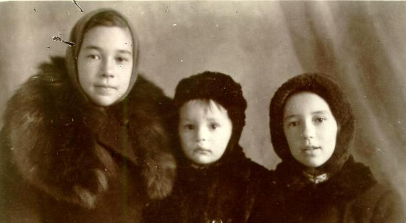
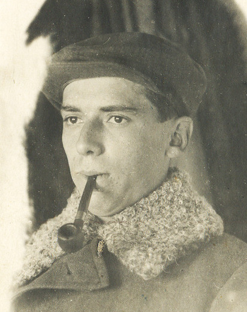
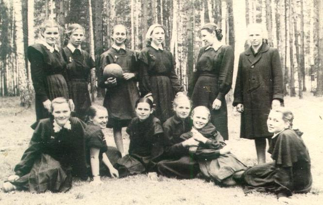
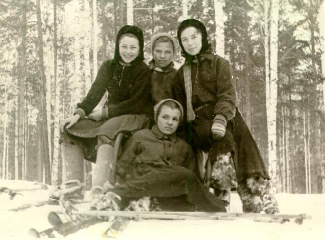
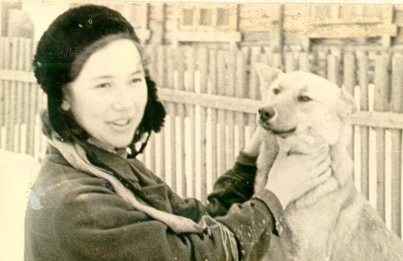
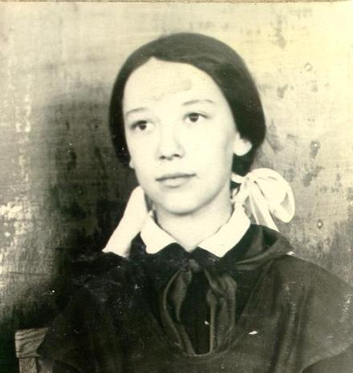
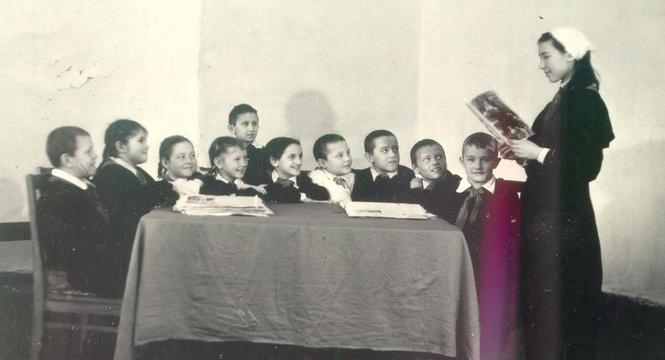

Я пошла в первый класс в 1947 году в п. Халилово на Южном Урале. В школе было две классных комнаты: в одной учились дети 2-го и 4-го классов, в другой – 1-х и 3-х. Мы сидели за одной партой с сестрой-третьеклассницей. Наша учительница Лиля Каспаровна давала задание старшим и занималась нами, потом наоборот.

Запомнились три эпизода. Чуть ли не в первый день занятий мальчик, что сидел за мной, взял пузырек с чернилами (чернильниц-непраливашек еще не было) и стал медленно и старательно выливать чернила на мое новенькое, в серую клеточку, мамой сшитое пальтишко. Вся правая пола стала фиолетовой. Учительница пришла в ужас, немедленно отправила меня домой (дом был рядом) со словами: «Скажи маме, чтобы выстирала пальто в молоке». Я с радостью помчалась домой.
В следующий раз уже я привела свою учительницу в ужас. Писали заглавную букву Л, Лиля Каспаровна ходила от парты к парте, проверяя, помогая тем, у кого не получалось (старшие решали примеры). Как я ни просила, она не подходила ко мне (писала я хорошо). Тогда я со злости после первых двух красивый строчек исписала всю страницу уродливыми каракулями. Наконец, она подошла ко мне и тоже со злости поставила огромную, на весь лист, единицу…
Конечно, я сильно мешала молодой, милой и доброй нашей учительнице. На чтении это выглядело так. Кто-нибудь маялся у доски: «М-А, ма…», а я нетерпеливо трясла рукой, чтобы меня вызвали. Меня вызывали, и я нарочито быстро отбарабанивала всю страницу.
Бедная Лиля Каспаровна не выдержала и пригласила в школу папу (а он был в свои 35 лет большим человеком – начальником геолого-разведочной партии) и попросила его перевести меня во второй класс. Папа ответил, что я нормальный ребенок, и оставил меня в первом.

Во второй класс я пошла в другую школу – в поселке значительно больше предыдущего, и школа была побольше, и мероприятия разные проводились. Запомнились концерты для родителей, где мы с сестрой играли на пианино в четыре руки и где я участвовала в пирамидах. Но учиться мне уже не нравилось – неинтересно! И так потом продолжалось всю жизнь.

Я любила ходить в школу, с увлечением занималась спортом и общественной работой, у меня было много друзей (это при том, что за десять школьных лет сменила шесть школ!), а с учебой было очень неровно.

В 6 классе пришла к нам домой учительница математики и классная руководительница, которую мы почему-то звали Жучкой. Она и мама сидят за круглым столом, а я, как у позорного столба, прижалась спиной к печке-голландке. Жучка долго и нудно выговаривала маме о том, что я могу прекрасно учиться, и добивалась, чтобы я дала слово учиться хорошо. Я молчала. Мама практически тоже, но когда учительница ушла, взорвалась: «Знаешь, либо «5», либо «2», нечего в троечниках ходить!». Я промолчала, но в течение всей четверти получала по математике последовательно «5», «2», «5», «2»…, в результате за четверть получила «3».

8 класс закончила с тремя «4», и в школе заговорили о будущей медалистке, но в 10 сползла на тройки – спорт, работа пионервожатой и членом комитета комсомола увлекала больше.

В пединституте, куда я поступила с двухлетним педагогическим стажем, проработав старшей пионерской вожатой в той же школе, где училась последние три года, было практически то же самое. И когда в начале 4 курса мне предложили работу учителя и классного руководителя в очень престижной школе, да еще услышав от уважаемой мной преподавательницы «Вы пришли в институт с лучшими знаниями, чем из него уходите», я перешла на заочное.

Зато работалось в школе мне легко! Класс был очень трудный, в нем сменилось 7 классных руководителей, потому и взяли девчонку без диплома. Едва я входила в учительскую, на меня обрушивался шквал жалоб на моих 8-классников. Однажды они разбили в классе плафон. Прихожу грозная и строгая: «Кто разбил?» - Тишина. Повторяю вопрос. Встает Боря Гагарин: «Я». От изумления потеряла дар речи. Я уже у всех детей побывала дома. Большая, дружная, скромная по достатку семья. Очень спокойный и трудолюбивый мальчик. Едва вымолвила: «Как?» - «Ботинком.» - «Как?» - «Я делал стойку на парте на подлокотниках, а потом встал на руки…». И тут я захохотала! Как еще я могла отреагировать, если в 5 классе, сидя на последней парте с хулиганистым Стаськой, я на спор сделала такую же стойку во время урока немецкого, пока Мэта Андреевна меняла очки (в журнал она смотрела в одних очках, на класс – в других). Класс дружно и облегченно хохотал вместе со мной. Мы решили скинуться и купить новый плафон…
О школе я могу говорить бесконечно, особенно теперь, на пенсии. Многое вспоминается…
Мне 10 лет. День рождения. Выскользнув с подружками из-за стола, усаживаемся на коврик у печки, болтаем, хохочем. Вдруг одна из нас говорит: «Ой, сегодня нельзя смеяться…». Мы замолкаем – действительно, сегодня в школе говорили о Дне памяти Ленина.
Мне 13. Тайком от родителей читаю книги из второго ряда книжного шкафа: «Джейн Эйр», «Книга для родителей», «Педагогическая поэма» Макаренко – и чего прячут? Больше всего любила Гайдара, Мусатова, Ильину, Вигдорову, Каверина, потом Чернышевского и Белинского.
Мне 14. Ноябрьские праздники. Надо идти на митинг в поселке. Погода жуткая –снег с дождем, сапог нет - ботиночки. Мама беспокоится, не хочет, чтобы я шла, поскольку крепким здоровьем с детства не отличалась. Папа сверкнул глазами: «Как это – не пойти?» И я иду, конечно.
Мне 17. Ухожу поздно вечером на тренировку. Папа спрашивает: «Во сколько придешь?» Я сама могу назвать любое время, но не позволю себе опоздать даже на минуту – как я буду смотреть папе в глаза? До сих пор интересно: а как папа отреагировал бы, если бы я в чем-то нарушила слово? Не знаю…
Я не припомню никаких методов воспитания в нашей семье – только личный пример родителей. У меня сын и дочь, две внучки. Мне ни разу не пришлось упрекнуть их в том, что они не сдержали слово…

Алла Басс (Дворжицкая, Ларина).
Написано для сайта LiveLib.ru